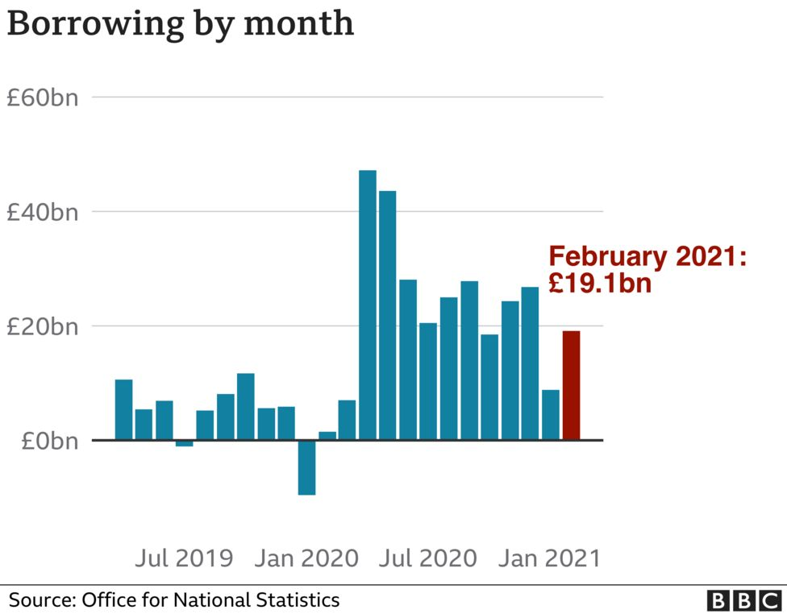

Government borrowing levels continued
to set new records last month, reflecting the cost of supporting the UK's economy during the pandemic.
The government borrowed £19.1bn in February, the highest figure for that month since records began in 1993.
Measures such as furlough payments have hit government finances hard.
However, February's borrowing figure - the difference
between spending and tax income - was not as high as some economists had forecast.
Borrowing for the financial year to date - between April and February - has now reached £278.8bn
the Office for National Statistics said,
a record for that period.
The Chancellor, Rishi Sunak, said: "Coronavirus has caused one of
the largest economic shocks this country has ever faced,
which is why we responded with our £352bn package of support to protect lives and livelihoods.
"This was the fiscally responsible thing to do and the best way to support
the public finances in the medium term."
Christine Jardine, Treasury spokesperson for the Liberal Democrats, said that while
the latest figures showed scale of the challenge posed by the pandemic,
"they can not be used as an excuse by the government to end support prematurely,
and leave behind people and businesses struggling across the UK".
"Thousands of small businesses are due to stay closed for months to come,
and millions of people are still worried about their jobs. Yet the chancellor
failed to provide them with long-term certainty and direct support in the Budget."

The latest ONS figures showed the government spent £3.9bn
last month on job support measures alone.
They also revealed a fall in tax income, notably from lower VAT,
business rates and fuel duty, although they also showed money coming in from
self-employed tax payments rose by £900m from last year.
Where does the government borrow billions from?
Total public sector debt has risen to £2.13 trillion, according to the ONS.
The figure almost exceeds the size of the UK's economy,
with debt having reached 97.5% of annual economic output.
Debt levels as high as this have not been seen since the early 1960s.

Ultimately, if it's consistently spending much more than it has in the past,
the state has to raise more money in taxes. But the key word there is "ultimately".
There is no urgency to repaying the government's debt. More urgent are
the debts of small businesses and poorer households.
Ordinary households rightly fear getting into too much debt because if interest rates rise,
lenders can close in and deploy lawyers and bailiffs with all the attendant unpleasantness.
But it is profoundly wrong and misleading to infer that it's like that for governments
who issue their own sovereign currency.
Unlike households, governments controlling their own currency can borrow without
limit money that they have freshly created.
They therefore can't go bankrupt. Because almost all of the money borrowed by the government
in this financial year (by issuing gilts) will be owed to another public sector body,
the Bank of England, it's nothing like a household borrowing from a bank.
And in fact, as the government tacitly acknowledged in its recent Budget, it makes
sense in the midst of an economic contraction for the government to spend more,
not less - not least because other parts of the economy (households and businesses)
aren't spending anything like what they normally would.
Without the additional government spending the economic contraction would,
without a shadow of a doubt, be worse.
'Pretty terrible'
Ruth Gregory, senior UK economist at Capital Economics, said that
despite the high level of borrowing, the government's increased
spending was the only sensible course at this time.
"Today's figures are pretty terrible but it is important to take in to account
the economy as well. The chancellor is doing the right thing in continuing
to support the economy," she told the BBC's Today programme.
"His action in the Budget
to extend many of the existing schemes means the rug will not pulled out from under
the feet of households and businesses.
"If we can limit the damage to the economy now, when the crisis ends it means
the country will be stronger amore able to cope with that debt."
Separately, the government said it would receive £1.1bn from selling part of its stake in NatWest Group.
The sale will cut the size of the government's stake in the bank - which was previously
called Royal Bank of Scotland - from almost 62% to 59.8%.
The government bought shares in the bank to help keep it afloat during the 2008 financial crisis.
The value of those shares has since fallen, meaning the government has made an overall loss
of £1.84bn excluding dividend payments.
The Treasury said "its ambition is to return the bank to private ownership once the original
goal of preserving financial stability has been achieved".